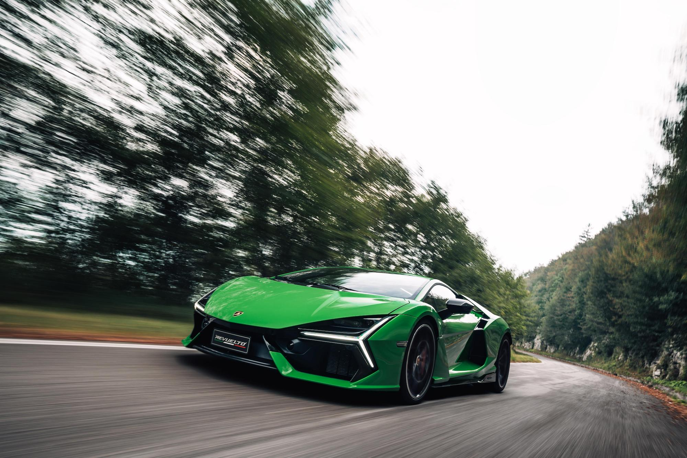
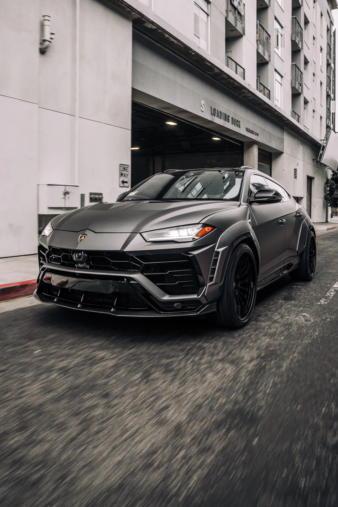
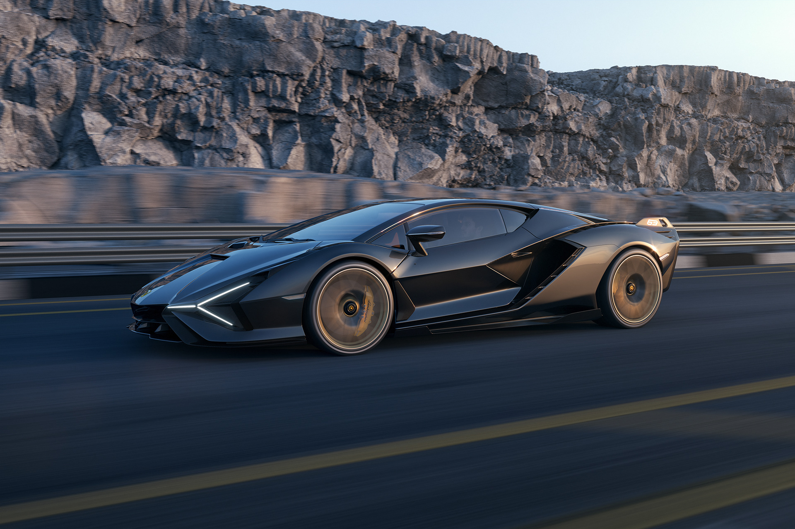
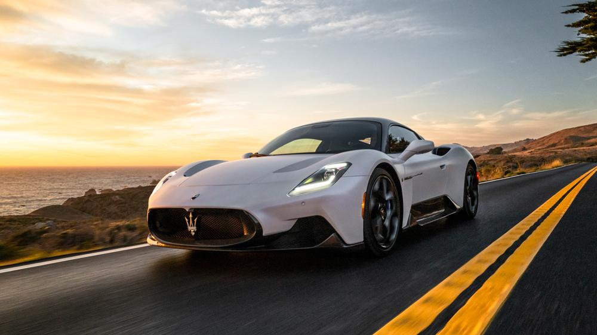

Our Automotive Services
Your Trusted Destination for Expert Vehicle Care
-

Lamborghini Sterrato
The Lamborghini Huracán Sterrato is a high-performance off-road supercar that blends Lamborghini’s signature speed and style with rugged, all-terrain capability. Based on the Huracán EVO, it features a raised suspension, wider track, underbody protection, and all-terrain tires, making it the first Lamborghini designed for both tarmac and dirt. Powered by a 5.2-liter V10 engine, the Sterrato delivers exhilarating performance while embracing adventure off the beaten path.
-

Lamborghini Revuelto
The Lamborghini Revuelto is Lamborghini’s first plug-in hybrid V12 supercar, marking a bold step into the future of performance. It pairs a brand-new naturally aspirated 6.5-liter V12 engine with three electric motors, producing a combined 1,001 horsepower. With aggressive aerodynamics, advanced all-wheel drive, and a new eight-speed dual-clutch transmission, the Revuelto delivers extreme speed with improved efficiency. It’s the spiritual successor to the Aventador, blending Lamborghini’s iconic design with cutting-edge hybrid tech.
-

McLaren 720S
The McLaren 720S is a lightweight, high-performance supercar that showcases McLaren’s focus on speed, precision, and innovation. Powered by a 4.0-liter twin-turbo V8 engine producing 710 horsepower, it accelerates from 0–60 mph in under 3 seconds. With its aerodynamic, sculpted design and carbon-fiber Monocage II chassis, the 720S combines extreme performance with everyday drivability. It's a standout in the Super Series, offering an exhilarating driving experience both on the road and the track.
-

Lamborghini Urus
The Lamborghini Urus is a luxury super SUV that combines Lamborghini’s trademark performance with everyday practicality. Powered by a 4.0-liter twin-turbo V8 producing 657 horsepower, it delivers sports car-like acceleration while offering all-wheel drive, off-road modes, and spacious seating for up to five. With aggressive styling, high ground clearance, and cutting-edge tech, the Urus brings the soul of a supercar to the versatility of an SUV — making it one of the fastest and most dynamic SUVs in the world.
-

Lamborghini Sian
The Lamborghini Sián is a limited-production hybrid supercar that blends classic V12 power with futuristic technology. It features a 6.5-liter naturally aspirated V12 paired with a supercapacitor-based hybrid system, delivering a total of 819 horsepower. As Lamborghini’s first hybrid, the Sián focuses on lightning-fast response and cutting-edge energy storage rather than electric range. With radical aerodynamics and a striking design inspired by the Terzo Millennio concept, the Sián is a bold bridge between Lamborghini’s past and its electrified future. Only 63 units were produced, making it ultra-exclusive.
-

Maserati MC20
The Maserati MC20 is a sleek, mid-engine supercar that marks Maserati’s bold return to high-performance innovation. Powered by a 3.0-liter twin-turbo V6 engine called the Nettuno, it produces 621 horsepower and features F1-derived tech like a pre-chamber combustion system. The MC20 combines Italian elegance with sharp aerodynamics, delivering 0–60 mph in under 3 seconds. With its lightweight carbon-fiber chassis and butterfly doors, the MC20 is built for both track thrills and refined road driving — a true modern Maserati masterpiece.